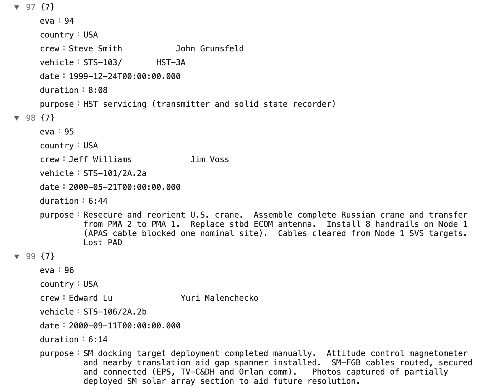
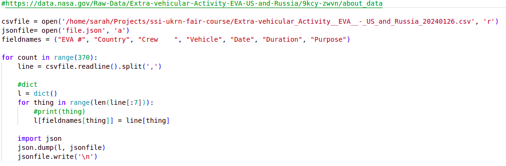

FAIR research software
Last updated on 2024-10-11 | Edit this page
Overview
Questions
- What are FAIR research principles?
- How do FAIR principles apply to software (and data)?
Objectives
After completing this episode, participants should be able to:
- Explain the FAIR research principles in the context of research software and data
- Explain why these principles are of value in the research community
Motivation
Think about the questions below. Your instructors may ask you to share your answers in a shared notes document and/or discuss them with other participants.
- What motivated you to attend this course? Did you come by choice or were you advised to attend?
- What do you hope to learn or change in your current research software practice? Describe how your knowledge, work or attitude may be different afterwards.
FAIR software
FAIR stands for Findable, Accessible, Interoperable, and Reusable and comprises a set of principles designed to increase the visibility and usefulness of your research to others. The FAIR data principles, first published in 2016, are widely known and applied today. Similar FAIR principles for software have now been defined too. In general, they mean:
- Findable - software and its associated metadata must be easy to discover by humans and machines.
- Accessible - in order to reuse software, the software and its metadata must be retrievable by standard protocols, free and legally usable.
- Interoperable - when interacting with other software it must be done by exchanging data and/or metadata through standardised protocols and application programming interfaces (APIs).
- Reusable - software should be usable (can be executed) and reusable (can be understood, modified, built upon, or incorporated into other software).
Each of the above principles can be achieved by a number of practices listed below. This is not an exact science, and by all means the list below is not exhaustive, but any of the practices that you employ in your research software workflow will bring you closer to the gold standard of a fully reproducible research.
Findable
In order to make your software more findable, you should:
- Create a description of your software to make it discoverable by search engines and other search tools
- Place your software in a public software repository (and ideally register it in a [general-purpose or domain-specific software registry][software-registries])
- Use a unique and persistent identifier (DOI) for your software (e.g. by depositing your code on Zenodo), which is also useful for citations - note that depositing your data/code on GitHub and similar software repositories may not be enough as they may change their open access model or disappear completely in the future, so archiving your code means it stands a better chance at being preserved
Accessible
In order to make your software more accessible, you should:
- Make sure people can freely, legally and easily get a copy your software
- Use code style conventions and code structure patterns, use comments and create documentation to make your code comprehensible by people (once they get a copy of it) - i.e. make your code accessible in the intelligible sense
Interoperable
In order to make your software more interoperable, you should:
- Explain the functionality of your software, so others can understand how other tools can interoperate with it
- Use standard formats for inputs and outputs
- Communicate with other software via standard protocols and APIs
Reusable
In order to make your software more reusable, you should:
- Document your software (including its functionality, and how to install and run it) to make it more understandable by others who may wish to reuse or extend it
- Follow best practices for software development (including code conventions, structure, readability and correctness)
- Test your software and make sure it works on different platforms/operating systems to make it more reusable
- Give a licence to your software clearly stating how it can be reused
- State how to cite your software, so people can give you credit when they reuse it
- Include a contributor policy so that others can contribute to your code and credit for contributions is provided
FAIR is a process, not a perfect metric
FAIR is not a binary metric - there is no such thing as “FAIR or”not FAIR”.
FAIR is not a perfect metric, nor does it provide a full and exhaustive software quality checklist. Software may be FAIR but still not very good in terms of its functionality.
FAIR is not meant to criticise or discredit work.
FAIR refers to the specific values of and describes a set of principles to aid open and reproducible research that can be a helpful guide for researchers who want to improve their practices (by helping them see where they are on the FAIR spectrum and help them on a journey to make their software more FAIR).
We are going to explore the above practices on an example software project we will be working on as part of this course.
Challenge
Think of a piece of software you use in your research - any computational tool used for data gathering, modelling & simulation, processing & visualising results or others. If you have a bit of code or software you wrote yourself, in any language, feel free to use that.
Think where on the FAIR spectrum it fits, using the following scale as a guide for each principle:
- 1 - requires loads of improvement
- 2 - on a good path, but improvements still needed
- 3 - decent, a few things could still be improved
- 4 - very good, only tiny things to improve upon
- 5 - excellent
Software and data used in this course
We are going to follow a fairly typical experience of a new PhD or
postdoc joining a research group. They were emailed some data and
analysis code bundled in a .zip archive and written by
another group member who worked on similar things but has since left the
group. They need to be able to install and run this code on their
machine, check they can understand it and then adapt it to their own
project.
As part of the setup for this
course, you should have downloaded a .zip archive
containing the software project the new research team member was given.
Let’s unzip this archive and inspect its content in VS Code. The
software project contains:
- a JSON file (
data.json) - a snippet of which is shown below - with data on extra-vehicular activities (EVAs or spacewalks) undertaken by astronauts and cosmonauts from 1965 to 2013 (data provided by NASA via its Open Data Portal)  - a Python script (
my code v2.py) containing some analysis. 
The code in the Python script does some common research tasks:
- Read in the data from the JSON file
- Change the data from one data format to another and save to a file in the new format (CSV)
- Perform some calculations to generate summary statistics about the data
- Make a plot to visualise the data
Let’s have a critical look at this code and think about how FAIR this piece of software is.
Discussion
Look at our code in VS Code and compare this data and code to the software you chose earlier (or assess it on its own). Do you think it is Findable, Accessible, Interoperable and Reusable? Give it a score from 1 to 5 in each category, as in the previous exercise, and then we will discuss it together.
Here are some questions to help you assess where on the FAIR spectrum the code is:
- Findable
- If these files were emailed to you, or sent on a chat platform, or handed to you on a memory stick, how easy would it be to find them again in 6 months, or 3 years?
- If you asked your collaborator to give you the files again later on, how would you describe them? Do they have a clear name?
- If more data was added to the data set later, could you explain exactly which data you used in the original analysis?
- Accessible
- If the person who gave you the files left your institution, how would you get access to the files again?
- Once you have the files, can you understand the code? Does it make sense to you?
- Do you need to log into anything to use this? Does it require purchase or subscription to a service, platform or tool?
- Interoperable
- Is it clear what kind of input data it can read and what kind of output data is produced? Will you be able to create the input files and read the output files with the tools your community generally uses?
- If you wanted to use this tool as part of a larger data processing pipeline, does it allow you to link it with other tools in standard ways such as an API or command-line interface?
- Reusable
- Can you run the code on your platform/operating system (is there documentation that covers installation instructions)? What programs or libraries do you need to install to make it work (and which versions)? Are these commonly used tools in your field?
- Do you have explicit permission to use your collaborators code in your own research and do they expect credit of some form (paper authorship, citation or acknowledgement)? Are you allowed to edit, publish or share the files with others?
- Is the language used familiar to you and people in your research field? Can you read the variable names in the code and the column names in the data file and understand what they mean?
- Is the code written in a way that allows you to easily modify or extend it? Can you easily see what parameters to change to make it calculate a different statistic, or run on a different input file?
I would give the following scores:
F - 1/5
- Positive: None
- Negative: No descriptive name, identifier or version number. No way to find again except through one person and they might not remember what file you mean.
A - 2/5
- Positive: No accounts or paid services needed. Python is free, the data is free and under a shareable license
- Negative: No way to get the code without that one person. Not clear where the data comes or what license it has unless you check the URL in the comment.
I - 3/5
- Positive: CSV and JSON files are common and well documented formats. They are machine- and human-readable. They could be generated by or fed into other programs in a pipeline.
- Negative: JSON might not be well used in some fields. No API or CLI.
R - 2/5
- Positive: Can ask collaborator for explicit permissions for using and modifying and how to credit them, if they did not specify before. Python is a common language.
- Negative: Python and library versions not specified. Bad variable names, hardcoded inputs, no clear structure or documentation.
Let’s now have a look into tools and practices that are commonly used in research that can help us develop software in a more FAIR way.
Further reading
We recommend the following resources for some additional reading on the topic of this episode:
- “Five recommendations for FAIR software”
- “10 easy things to make your research software FAIR”
- Automating assessment of the FAIR Principles for Research Software (FAIR4RS)
- Short online courses on various aspects of research software (including FAIR reseach software and data), by the NeSC Research Software Support
- CodeRefinery - training and e-Infrastructure for research software development
- A self-assessment checklist for FAIR research software, by the Netherlands eScience Center and Australian Research Data Commons
- Awesome Research Software Registries - a list of research software registries (by country, organisation, domain and programming language) where research software can be registered to help promote its discovery
Also check the full reference set for the course.
Key Points
- Open research means the outputs of publicly funded research are publicly accessible with no or minimal restrictions.
- Reproducible research means the data and software is available to recreate the analysis.
- FAIR data and software is Findable, Accessible, Interoperable, Reusable.
- These principles support research and researchers by saving time, reducing barriers to discovery, and increasing impact of the research output.